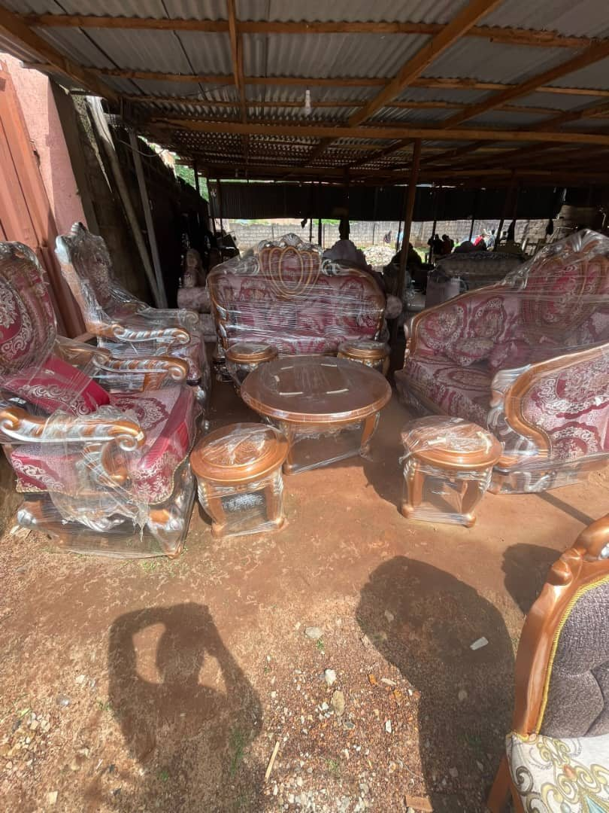

DIRECTOR
Ogba Emmanuel Onwe
Bringing more than 38 years of experience to the company's direction, standards and craft.
THE PEOPLE BEHIND THE WORK
Behind every lasting piece is a person, a skill and a standard worth preserving. Meet some of the people helping shape the Okeosisi story.
LEADERSHIP & STEWARDSHIP
Okeosisi is built on the belief that good work is the result of experience, care and people who take pride in what they create.
For more than 38 years, the company has grown through practical knowledge, attention to detail and the passing on of skills. Our people bring those values into the workshop, the showroom and every customer relationship.
DIRECTOR
Bringing more than 38 years of experience to the company's direction, standards and craft.

SUCCESSOR
Part of the next chapter of the Okeosisi story, supporting the company's continued growth and visibility.

MANAGER
Supporting the coordination of the company's day-to-day operations.
Leadership profiles are presented using the roles and details currently supplied by the company. Additional biographies and individual portraits can be included as they become available.
WHAT GUIDES OUR WORK
Knowledge built over decades informs the way we approach furniture, materials and finishing.
Careful coordination and respect for the customer guide each project from conversation to delivery.
Skills and standards are carried forward by people learning, practising and improving their craft.

KNOWLEDGE PASSED FORWARD
A craft stays alive when it is shared.
Okeosisi has supported a community of more than 30 apprentices, creating opportunities for practical learning and the development of furniture-making skills. Their contribution is part of the wider story of experience and continuity.
Discover the Okeosisi collection or speak with our team.